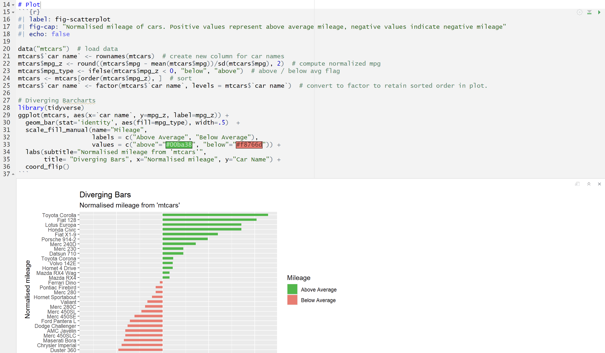

5513Assignment2- Git & GitHub Beginner’s Guide with RStudio and CLI
Introduction
This guide demonstrates how to efficiently use Git, GitHub, and the command line interface (CLI) for version control and collaboration. By following these steps, you’ll master Git for Quarto projects in RStudio.
Step 1: Create a new RStudio Project and a simple Quarto file
First, open RStudio and create a new project named 5513Assignment2 (Figure 1).
Inside the project, make a new Quarto document called example.qmd (Figure 2). Add some simple content (Figure 3) and click the Render button to knit it into an HTML file (Figure 4).

After rendering, your project folder should now contain both the .qmd file and the .html output (Figure 5).
ü߆ Reflection:
This step is important because it sets up your working space. It connects your folder to Git so it can track changes and link to GitHub later.
Step 2: Initialize the folder as a Git repository and push to GitHub
In RStudio, click the “Terminal” tab at the bottom panel, and run the following commands:
git init
git add .
git commit -m "Initial commit with example.qmd and knitted HTML"Then, on GitHub, create a new repository (Figure 6) and copy the SSH address(Figure 7).
Then link your local repo to GitHub and push it:
git remote add origin git\@github.com:Jing0922/5513Assignment2.git
git branch -M main
git push -u origin mainü߆ What this step does:
Now your local project is connected to GitHub. You can store your work online and work with others more easily.
Step 3.1: Create and push a new branch testbranch
There are two different ways to create a new branch and move the HEAD to the new branch:
- The first method is:
git branch testbranch
git switch testbranch- Another is:
git switch -c testbranchAfter any of the above steps,you can check all local branches, use:
git branchYou can see there are two branches locally(Figure 10).
Now open example.qmd, add a small change (adding a new sentence on line 11, like Figure 11), and save it.
Then run these commands:
git add example.qmd
git commit -m "Edit example.qmd in testbranch"
git push origin testbranchThe result is shown in Figure 12.
ü߆ Why use branches?
Branches let you test new ideas without changing your main files. This keeps your main project safe.
Step 3.2: create a folder called data
Now still in testbranch, we want to create a new folder and add the data from Assignment 1 to it(Figure 13). In the terminal, you can use this command to make a folder:
mkdir dataTo copy the data file, you have two options:
- Using Git bash, may not always work:
cp "/c/Users/10354/5513/etc5513-assignment-1-Jing0922/Data/Meat_con.csv" "./data/"- Safer way: Just manually copy the file into the data folder using File Explorer.
Now add and commit the changes:
git add data/
git commit -m "Add data folder with assignment 1 data"The final result is shown in Figure 14.
ü߆ What did we do?
We saved useful data in the repo and tracked it with Git.
Step 4: Amend the previous commit
Sometimes we forget to include something in the last commit. We can fix that with --amend.
First, check the commit history:
git log --onelineYou will get three commits now(Figure 15).
Then:
git commit --amendThis will open the Vim editor (Figure 16) showing the last commit message.
üí° Vim Tip: If you‚Äôre new to Vim, remember:
- Press i to enter Insert mode (cursor starts blinking)
- Modify the message as needed
- Press Esc to return to Command mode
- Type :wq then press Enter to: write (save) + quit (exit Vim)
After editing, run:
git push origin testbranch --forceNow you check the commit history again:
git log --onelineYou can see that the last commit has been modified(Figure 18).
ü߆ Why use ‚Äìamend?
It lets us fix the last commit instead of making a new one.
| Command | Use Case | Safety |
|---|---|---|
git commit --amend |
Edit the most recent commit | Medium |
git reset |
Rewind to any past commit | High |
ü߆ Why use ‚Äìforce?
Because the history changed, GitHub needs a forced update to accept it.
⚠️ Warning:
Amending rewrites Git history. After amend, you must use git push -f. This is dangerous if others are working on the same branch! Always check with your team first.
Step 5: Switch back to the main branch and cause a merge conflict
Now we go back to the main branch:
git checkout mainNotice that the changes of example.qmd made in testbranch (the line 11 modification shown in Figure 11) are now absent. Don’t be worried! This is expected behavior when switching branches.
Now, we deliberately create a conflict. Open example.qmd and edit the same line 11 (but with different content than in testbranch). And add new content to other lines (as shown in Figure 19). Save it.
Then run:
git add example.qmd
git commit -m "Conflicting change in main branch"
git push origin mainü߆ Why do this?
We’re preparing for a merge conflict by changing the same line in two branches.
Step 6: Merge testbranch into main and resolve conflict
Now we try to combine the two branches:
git merge testbranch⚠️ Critical Check:
You must be on the main branch before merging. If you accidentally run git merge main while on testbranch, the merge direction will be reversed!
A conflict will appear in example.qmd. It looks like Figure 21. There are a lot of markers, such as <<<<<<<, ======= and >>>>>>>.
Open the file and manually fix the content. You can keep both lines, delete one, or rewrite(Figure 22). Save it.
Then:
git add example.qmd
git commit -m "Resolve merge conflict"
git push origin mainTo check status:
git statusThe result is Figure 23. In GitHub, the example.qmd looks like Figure 24.
ü߆ Why do conflicts happen?
Conflicts happen when both branches edit the same lines. Git needs your help to resolve it.
ü߆ Why we do this:
Merging brings together updates from different branches. It’s a key part of collaboration and ensures everyone’s work fits together.
Step 7: Tag the commit as version 1.0
Now we want to mark the current commit as a version.
Use this command to create an annotated tag:
git tag -a v1.0 -m "Release version 1.0"
git push origin v1.0This creates a tag named “v1.0”, which will appear on GitHub(Figure 25).
ü߆ Reminder:
Tags are like bookmarks. They help you find key points in your project history. Annotated tags (-a) store extra metadata including who created them and when.
Step 8: Delete the testbranch
Now that testbranch has been successfully merged into main, we can safely remove it to keep our repository organized.
⚠️ Critical Check:
You can not delete your currently active branch, which means you can not be on the testbranch.
Delete the branch locally:
git branch -d testbranch Check branch, use:
git branchDelete the branch from GitHub (remote):
git push origin --delete testbranchNow, only the main branch will be left locally(Figure 26) and in your GitHub repo(Figure 27).
ü߆ Why delete branches?
Deleting old branches keeps your project tidy and organized. Just remember: Git won’t let you delete the branch you’re currently using.
Step 9: View the commit log
You can check the history of your changes by using:
git log --onelineThis shows a short list of all your commits with commit IDs and messages(Figure 28).
ü߆ Why do this?
Viewing the commit history shows who made changes, when, and what was done. It’s especially helpful for tracking team work or reviewing your progress.
Step 10: Add a plot and undo a commit
Add a new section to example.qmd and draw a plot, like Figure 29.

Then add and commit it:
git add example.qmd
git commit -m "Add simple plot"To undo the most recent commit but keep all changes in your working directory, use a soft reset:
git reset --soft HEAD~1This command removes the last commit but keeps the changes in the staging area.
To verify the changes:
git statusYou can see that all previously committed changes now appear as “Changes to be committed” (shown in green)(Figure 30)
ü߆ Why do this?
Sometimes we want to fix a commit message or add more things before pushing it. Soft reset is useful when you want to change the commit message or add more to the commit.
Extended Knowledge: Other Reset Modes
Mixed Reset(Default)
git reset HEAD~1This command unstages changes but keeps them in working directory. If you verify with git status, changes show as unstaged in red.
Hard Reset(⚠️ Dangerous!)
git reset --hard HEAD~1This command completely discards the commit and all local changes. No recovery unless you used git reflog.
ü߆ Be careful:
- Soft reset (–soft) → Keeps changes staged.
- Mixed reset (–mixed) → Keeps changes but unstages them.
- Hard reset (–hard) → Deletes everything in the commit.
Tips
There are some tips for you:
Use clear commit messages like “Add plot section to qmd” or “Fix conflict between branches”.
Keep commits small and focused.
Always use branches when testing or adding new features.
Conclusion
This guide gives you a strong start with Git, GitHub, RStudio and CLI. By learning these steps, you can manage your work more clearly and work better with others.